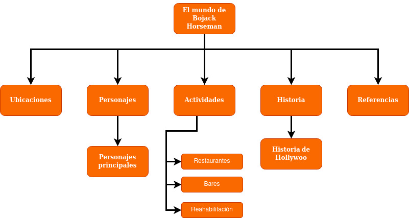

UBICACIONES
PERSONAJES
ACTIVIDADES
HISTORIA
MAPA
REFERENCIAS
Biography
Fotografia portada
Imagen hollywoo
Imagenes de los personajes
Información de los personajes
Imágenes de los lugares
Imagen del logo de Boajck Horseman
Imagen de cuerpo completo de Boajck Horseman
Imagen de cuerpo completo de Todd Chavez
Imagen de cuerpo completo de Diane
Imagen de cuerpo completo de Princess Carolyn
Imagen de cuerpo completo de Mr. Peanutbutter
Mapa de navegación

Santiago Cortes Romero
Universidad Nacional de Colombia
Gráfica interactiva
2021